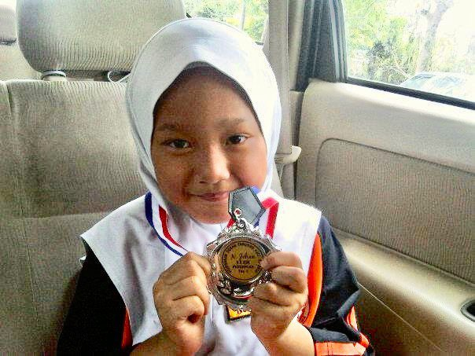
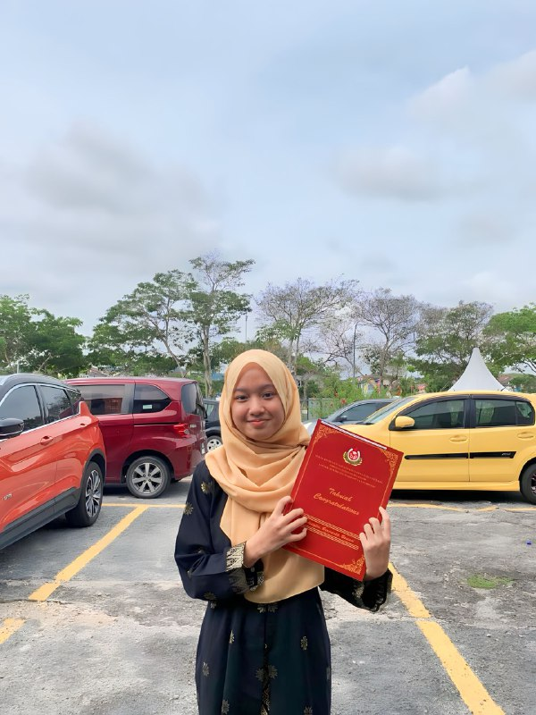
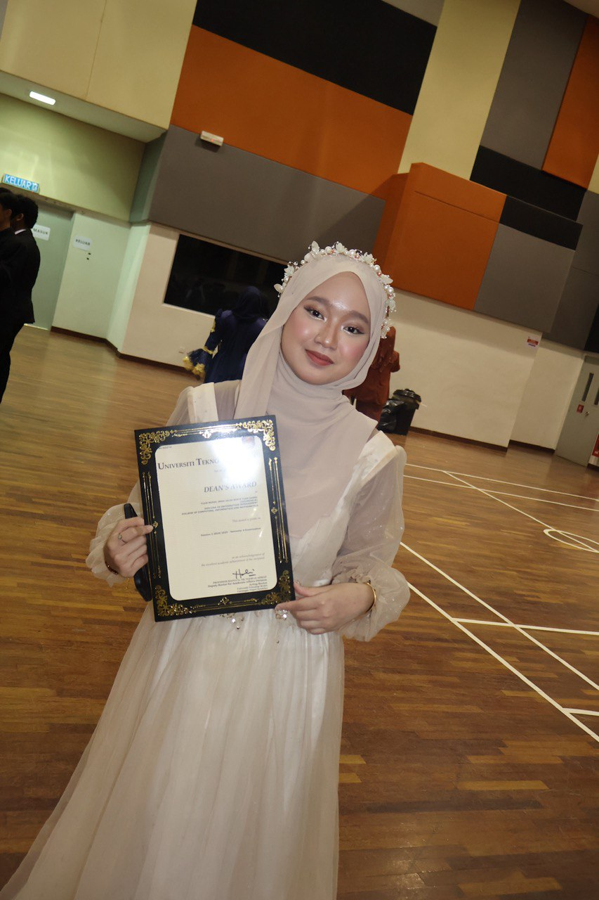
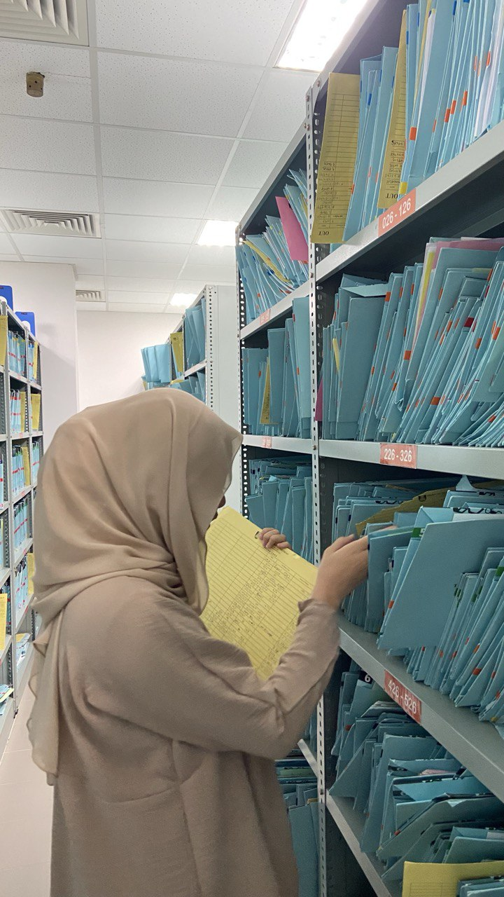

About Me
"Get to know me better."
{kind=link}
👤 Full Name
Tuan Nurul Iman Izlin binti Tuan Sabri
💬 Preferred Name
Iman
🌟 About Me
- Passionate about information management and organization
- Skilled in handling records and systems professionally
- Interested in learning, personal growth, and creative problem-solving
- I am dedicated to my studies and personal development, always striving to learn and grow in all aspects of life. 📚💼
🎓 Education
- 🏫 Primary School: SK Saujana Utama 
- 🏫 Secondary School: SMK Saujana Utama 
- 🎓 Diploma: Information Management, UiTM Rembau 
During my primary school years, I actively participated in various activities and competitions. I won several awards, which motivated me to continue studying hard. These experiences taught me discipline, self-confidence, and teamwork with my friends.
During my secondary school years, I was actively involved in school responsibilities. I served as a library perfect and also as a class monitor, which helped me develop leadership, responsibility and communication skills. Academically, I worked hard and achieved good results in my SPM examination. These experiences shaped my character and prepared me for future challenges.
During my diploma studies, I focused on information management and systems. I gained practical skills in data handling, database management, and information technology. This experience has prepared me for a career in the field of information management.
💼 Experience
- 🏥 Internship: Hospital Al-Sultan Abdullah, UiTM Puncak Alam 
During my internship at Hospital Al-Sultan Abdullah, I gained valuable experience in healthcare administration and patient record management. I learned how to handle sensitive information professionally and contributed to improving the efficiency of the hospital's operations.